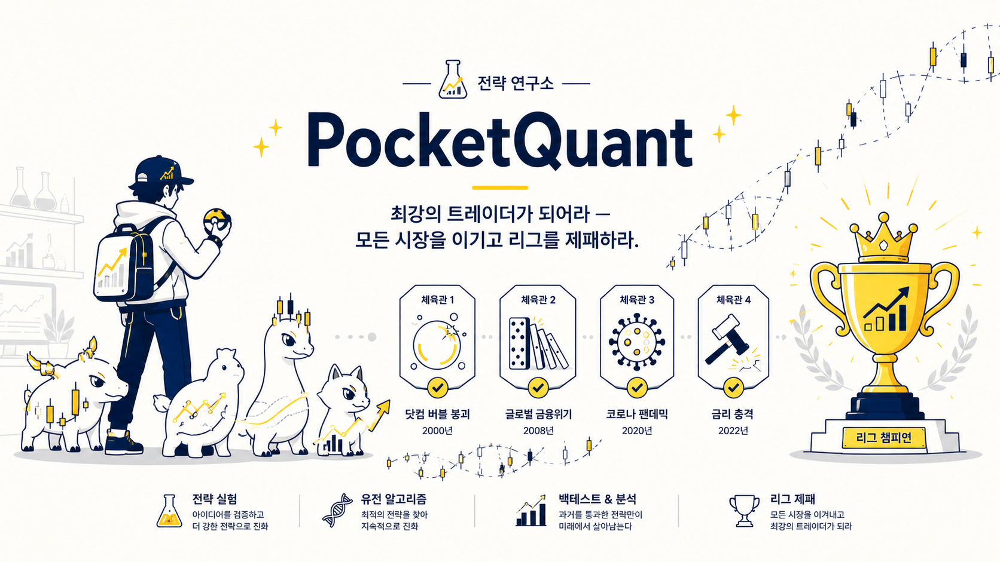

GOTTA MONEY 'EM ALL — 모든 시장을 제패하고 리그 챔피언이 되는 최강 전략 연구실
복잡한 금융 로직보다 게임 컨셉을 우선한 CLI 프로젝트입니다. 전략 포켓몬을 만들고, 가짜 데이터 기반 체육관에서 생존 테스트를 하며, 유전 알고리즘(GA)으로 최적의 시그널 조합을 탐색합니다.
| 게임 용어 | 실제 의미 |
|---|---|
| 포켓몬 1마리 | 시그널 1개 |
| 트레이너 / 전략 | 시그널을 운용하는 모델 |
| 체육관 | 시장 국면 (regime) |
| 체육관 도전 | 백테스트 |
| 생존 / 사망 | 통과 / 실패 |
| 교배 · 진화 | 유전 알고리즘 (GA) |
전략은 아래 유전자를 조합해 만들어집니다.
| 유전자 | 점수 | 의미 |
|---|---|---|
DD | +20 | Drawdown |
RSI | +15 | Relative Strength Index |
MA | +25 | Moving Average |
BB | +10 | Bollinger Bands |
FX | +5 | FX 노출 |
예시: DD몬, DD-RSI몬, DD-RSI-MA몬, 타이탄 드래곤
각 체육관은 difficulty, volatility를 가집니다. 값은 실제 역사 데이터 근거이며,
난이도(생존 어려움)와 변동성(VIX 피크)은 서로 비례하지 않습니다.
| 체육관 | difficulty | volatility | 근거 |
|---|---|---|---|
FINANCIAL_CRISIS | 90 | 80 | S&P -57%·시스템 붕괴, VIX~80 → 최난도 |
DOTCOM | 85 | 55 | -49%(나스닥-78%), 2.5년 느린 약세장 |
RATE_SHOCK | 60 | 40 | -25%, 채권 동반하락이나 질서있음 |
COVID | 40 | 95 | V자 즉시회복(생존쉬움), VIX 82.7 역대최고 |
최종 점수 = (유전자 점수 합) + random(-20 ~ +20)
최종 점수 >= 체육관 difficulty → 생존
그렇지 않으면 → 사망생존률 등급: S≥0.9 · A≥0.7 · B≥0.5 · C≥0.3 · D 그 외
random(±20)이 "랜덤 계측값 주입" 지점입니다. 나중에 yfinance 실데이터 백테스트로 교체하면 = "실계측".app/backend/ 내부 파일을 직접 실행하면 상대 import가 깨집니다. 한글 깨짐(Windows): $env:PYTHONIOENCODING="utf-8"python main.py # 유전자 개수 랜덤
python main.py -g 3 # 유전자 3개 고정python main.py --evolve
python main.py --evolve --pop 20 --generations 8 --trials 30 --seed 42| 옵션 | 의미 | 기본 |
|---|---|---|
--evolve | 진화 모드 실행 | - |
--pop | 개체군 크기 | 20 |
--generations | 세대 수 | 10 |
--trials | 전략당 평가 도전 횟수(평균낼 표본) | 20 |
--seed | 랜덤 시드 고정 (재현 가능) | 랜덤 |
=== PocketQuant · 진화 모드 (단일목적 GA) ===
개체군 20 · 세대 8 · 시도 30
[세대 1] 최고적합도 0.62 최강: BB+DD+FX+MA+RSI
[세대 6] 최고적합도 0.66 최강: DD+RSI+MA+BB+FX
[세대 8] 최고적합도 0.62 최강: DD+RSI+MA+BB+FX
=== 최종 챔피언 ===
유전자: DD, RSI, MA, BB, FX
이름: DD-RSI-MA-BB-FX몬
적합도(평균 생존률): 62.5%
시장별 박살 현황 (생존률 낮은 순):
pocket_quant/
├─ main.py # CLI 진입점 (단판 / 진화 모드)
└─ app/
└─ backend/
├─ models.py # dataclass + 유전자 점수 / 등급 테이블
├─ strategy.py # 전략 생성 + 이름 자동 생성
├─ gym.py # 체육관 4종 (시장 국면)
├─ battle.py # 점수 계산 → 생존 / 사망 판정
└─ evolve.py # 단일목적 GA (개체군/선택/교배/돌연변이/세대)| 단계 | 내용 |
|---|---|
| ✅ v0.2 단일목적 GA | 개체군·선택·교배·돌연변이·세대 + 시장별 박살 로그 |
| ⏭️ 다목적 (NSGA-III) | 체육관별 생존력을 각각의 목적으로 → 전략 Pareto front |
| 🔭 실데이터 | battle.fight()를 yfinance 백테스트로 교체 |
| 🔬 오박사(LLM) | 승패 후 "왜 졌는지" 성과 귀인 해설 |
maximize Y over X)로 정식화한 설계 노트는 OPTIMIZATION.md 참고.